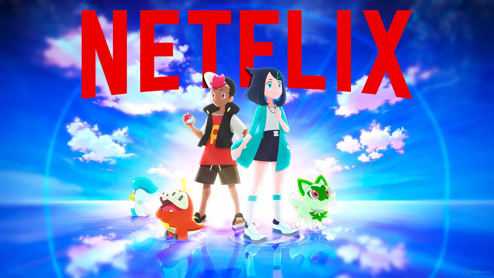

Novos Títulos de Episódios do Anime Pokémon Horizontes (Março/2024)
Novos títulos de episódios do anime Pokémon Horizontes foram revelados. Confira a programação para os próximos episódios: EP: 41 Título Original: Enter the Intense Mom! Título Traduzido: A Mãe Intensa Aparece! Data de Exibição: 01/03/24…
por Danilo Andretta - 03/03/2024

Sem Ash, 'Pokémon: Horizontes' tenta perpetuar a franquia e recuperar fãs
Toda jornada tem um fim, e a de Ash e Pikachu em "Pokémon" acabou após 1.234 episódios, exibidos entre 1997 e 2023. Mas isso não quer dizer que uma das franquias mais lucrativas da atualidade ficaria sem um anime semanal para chamar de seu. A nova série…
por Fábio Garcia - 02/03/2024

Pokémon Horizontes | A temporada mais importante do anime chega à Netflix
Depois de mais de 25 anos acompanhando Ash e Pikachu, finalmente chegou a hora de dar adeus a esses personagens. O anime Pokémon Horizontes: A Série chega à Netflix nesta quinta-feira (07) como um dos capítulos mais importantes de toda a franquia de monstrinhos da Nintendo — afinal, trata-se da primeira que não será protagonizada pela dupla que marcou gerações. Para marcar um novo momento na saga, temos…
por André Mello - 02/03/2024